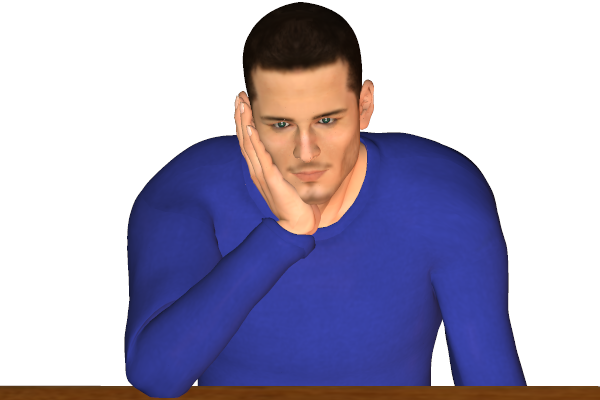
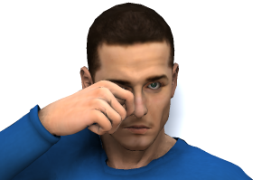
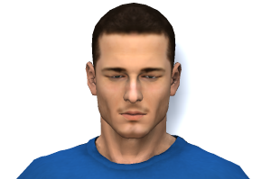
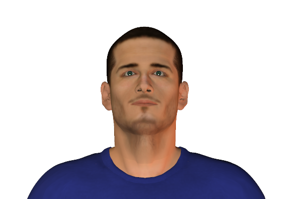
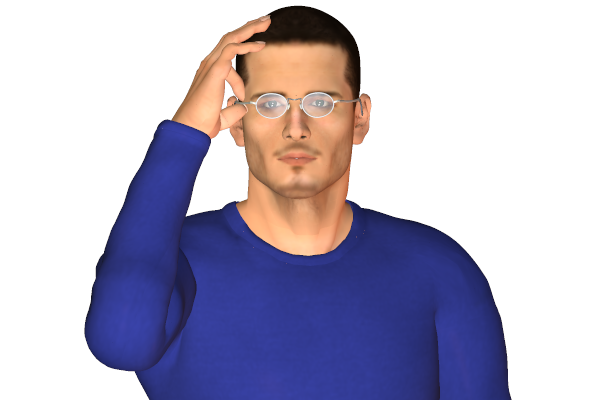
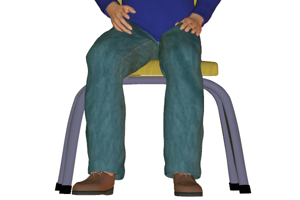

Bookmark added
-
hand supporting chin or side of faceevaluation, tiredness or boredomPeople displaying this signal are usually in a state of boredom or are assessing the situation.
-
hands in pockets
 disinterest, boredomThe signal usually indicates the person is bored if he is amongst a group of people.
disinterest, boredomThe signal usually indicates the person is bored if he is amongst a group of people. -
weak handshake
 variousIt can have various indications. It can be the persons style of handshake or boredom or he could just be a passive personality.
variousIt can have various indications. It can be the persons style of handshake or boredom or he could just be a passive personality. -
rubbing eye or eyesdisbelief, upset, or tirednessRubbing the eyes can indicate disbelief or getting upset. It can also indicate crying or tiredness which can be due to boredom.
-
blinking infrequentlyvariousIt is not the most revealing sign of understanding body language.It can be due to boredom if the eyes are unfocussed or can also be concentration if eyes are focussed. It can also indicate negativity.
-
head held upneutrality, alertnessHigh head position indicates attention while listening with an open mind and has no bias.
-
active listening
 attention, interest, attractionAttentively listening indicates the person is interested. It can also signal attraction or being alert to what is being said, the head may also tilt. The eyes generally remain focussed on the speaker.
attention, interest, attractionAttentively listening indicates the person is interested. It can also signal attraction or being alert to what is being said, the head may also tilt. The eyes generally remain focussed on the speaker. -
removing spectaclesalerting wish to speakThis gesture is usually done when the person becomes alert or when he hears something that could shock him.
-
leg direction, sitting - generalinterest, attentiveness (according to direction)Generally the direction of knees points towards where the person is interested in. The more prominent the sitting position is, the intense the feeling of attraction or repulsion is.